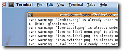
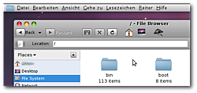
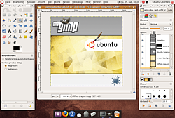

GNOME Globalmenu
Archivierte Anleitung
Dieser Artikel wurde archiviert, da er - oder Teile daraus - nur noch unter einer älteren Ubuntu-Version nutzbar ist. Diese Anleitung wird vom Wiki-Team weder auf Richtigkeit überprüft noch anderweitig gepflegt. Zusätzlich wurde der Artikel für weitere Änderungen gesperrt.
Anmerkung: Ein Artikel zur älteren Version 0.4 befindet sich unter Archiv/GNOME Globalmenu 0.4.
Zum Verständnis dieses Artikels sind folgende Seiten hilfreich:
Gnome2 Globalmenu  (GnoMenu) ist eine Weiterentwicklung des Mac-Menüs. Ziel ist es, bei GNOME- (Gtk+) und später auch Qt-Anwendungen das Menü - also die Leiste in der in Anwendungen "Datei | Bearbeiten | Ansicht | ..."steht - in ein Applet des GNOME Panel auszulagern. Das Menü erscheint dann nicht mehr im Programmfenster, sondern an der entsprechenden Stelle im Panel. Dadurch steht in der Anwendung mehr Platz zum Anzeigen der Inhalte zur Verfügung. Vorteile durch den Einsatz:
(GnoMenu) ist eine Weiterentwicklung des Mac-Menüs. Ziel ist es, bei GNOME- (Gtk+) und später auch Qt-Anwendungen das Menü - also die Leiste in der in Anwendungen "Datei | Bearbeiten | Ansicht | ..."steht - in ein Applet des GNOME Panel auszulagern. Das Menü erscheint dann nicht mehr im Programmfenster, sondern an der entsprechenden Stelle im Panel. Dadurch steht in der Anwendung mehr Platz zum Anzeigen der Inhalte zur Verfügung. Vorteile durch den Einsatz:
es spart Platz - besonders gut für Note- und Netbooks
Menüs und Fensterliste liegen logisch dicht beieinander
Man hat kein Problem mehr mit engen Fenstern, da die Menübreite nicht mehr auf die Breite der Fenster beschränkt ist (siehe Inkscape, The GIMP)
Es ist weniger irritierend: Falls zwei oder mehr Menüleisten auf einmal auf dem Bildschirm sind, kann das manche Leute dazu bringen, die falsche zu wählen.
Globalmenu ist der erste Schritt zu einem dokumentzentrierten Desktop: Discussion and thoughts On A Document-Centric Gnome
Hinweis:
Die Verlegung des Anwendungsmenüs in das Panel funktioniert bis dato nur mit GNOME- bzw. GTK-Anwendungen. Also beispielsweise Gimp, Pidgin oder Nautilus. Programme wie Firefox, Thunderbird oder OpenOffice.org zeigen auch weiterhin ihr Menü im Anwendungsfenster an.
|  | Beispiel der offiziellen Homepage |
|  | Weiteres Beispiel mit Nautilus |
|  | Volles Bildschirmfoto mit GIMP |
Hintergrund und Status¶
Obwohl der offizielle Projektname mit "gnome2" beginnt, lautet der Arbeitstitel noch "gnome" (ohne die 2). Daher sind auch die Pakete dementsprechend benannt. Derzeit ist es nur auf Englisch erhältlich, aber Übersetzungen sind bereits in Bearbeitung.
Achtung!
Derzeit läuft es schon stabil. Dennoch handelt es sich um eine Version, die die 1.0 noch nicht erreicht hat. Daher sind noch nicht alle gewünschten Features implementiert. In der aktuellen 0.7.8 sind aber bereits die verfügbaren Funktionen sehr stabil.
Installation¶
Paketquellen¶
Adresszeile zum Hinzufügen des PPAs:
ppa:globalmenu-team/ppa
Hinweis!
Zusätzliche Fremdquellen können das System gefährden.
Ein PPA unterstützt nicht zwangsläufig alle Ubuntu-Versionen. Weitere Informationen sind der  PPA-Beschreibung des Eigentümers/Teams globalmenu-team zu entnehmen.
PPA-Beschreibung des Eigentümers/Teams globalmenu-team zu entnehmen.
Damit Pakete aus dem PPA genutzt werden können, müssen die Paketquellen neu eingelesen werden.
Nach dem Hinzufügen der Paketquelle kann das Programm über das Paket
gnome-globalmenu (ppa)
 mit apturl
mit apturl
Paketliste zum Kopieren:
sudo apt-get install gnome-globalmenu
sudo aptitude install gnome-globalmenu
installiert werden.
Bedienung¶
Lauffähig machen¶
Man klickt mit der rechten Maustaste auf ein Panel seiner Wahl (oder auf ein neu erstelltes) und wählt "Zum Panel hinzufügen". Dort taucht dann das "Global Menu Applet" auf. Auf dieses klickt man ebenfalls mit  und wählt "Einstellungen". Im folgenden Dialog klickt man auf "Globales Menü für GTK-Anwendungen aktivieren".
und wählt "Einstellungen". Im folgenden Dialog klickt man auf "Globales Menü für GTK-Anwendungen aktivieren".
Normale Nutzung¶
Wie auf den Bildschirmfotos zu sehen hat man jetzt nur noch eine Menüleiste für alle Fenster. Dort erscheint immer das Menü des derzeit aktivierten Fensters. Wenn man also z.B. das Fenster von Pidgin aktiv ist, so erscheint das Menü von Pidgin. Klickt ihr auf den Desktop, so erscheint das Menü von Nautilus.
Startet man GIMP, so sind die Änderungen am auffälligsten. Besonders hier merkt man den gewonnen Platz auf dem Desktop. Nicht GNOME-integrierte Programme wie Firefox und OpenOffice profitieren nicht vom Platzgewinn, da dieses keine GTK+-Programme sind.
Weitere Einstellungen¶
Weitere Einstellungsmöglichkeiten findet ihr mit -Klick auf das Applet. Diese sind recht selbsterklärend. Beim Verschieben ist das Applet leer, sofern keine Anwendung das Menü füllt (z.B. Nautilus). Da das Applet keinen "Anfasser" hat, ist es dadurch unsichtbar. Mit gefülltem Menü kann man dieses allerdings auch "sichtbar verschieben".
Problembehebung¶
Weit auseinander stehende Einträge¶
Wahrscheinlich liegt dieses Problem am verwendeten GTK-Design. Um es temporär zu umgehen. wählt man im Dialog "Erscheinungsbild" ein anderes Design. Falls das Problem damit behoben ist, sollte es beim Google Issue Tracker (s.u.) gemeldet werden.
Fehlermeldung beim Starten von Gtk-Anwendungen aus dem Terminal¶
Erscheint nach der Installation bei jedem Start einer Gtk-Anwendung aus der Terminal folgende Fehlermeldung:
Gtk-Message: Failed to load module "gnomenu-panel": libgnomenu-panel.so: cannot open shared object file: No such file or directory
liegt das daran, dass der Pfad im Plugin falsch gesetzt ist. Diese Fehlermeldung, die ein Relikt der Installation von Version gnome-globalmenu 0.7.8 ist, stört den korrekten Betrieb von Globalmenu nicht. Möchte man sie trotzdem loswerden, hilft ein einfaches Verlinken der Datei libglobalmenu-gnome-panel.so auf den richtigen Pfad:
cd /usr/lib/gtk-2.0/modules sudo ln -s libglobalmenu-gnome-panel.so libgnomenu-panel.so
Diese Lösung hilft jedoch nur, wenn man Globalmenu auch benutzt. Deinstalliert man Globalmenu, erscheint die Fehlermeldung natürlich wieder, da man mit der Deinstallation auch die Datei libglobalmenu-gnome-panel.so löscht. Hier muss man händisch die Integration in das Gnome-Panel in dem Konfigurierungseditor deaktivieren. Einfacher geht das mit dem Befehl
gconftool-2 -s /apps/gnome_settings_daemon/gtk-modules/gnomenu-panel --type=bool false
Global Menu mit dem Xfce Panel¶
Prinzipiell stellt das global-menu team ein Plugin fürs Xfce-Panel bereit, allerdings ist es zur Zeit "unmaintained". Die Version 0.7.8 funktioniert mit dem Xfce-Panel 4.6.x, die aktuellere 0.7.9 nicht.
Die Installation geht genau wie bei der Version für Gnome, allerdings muss man - bevor man das Plugin zum Panel hinzufügt - noch die Datei ~/.config/xfce4/xinitrc mit folgendem Inhalt erstellen:
1 2 3 4 | #!/bin/sh export GTK_MODULES=globalmenu-gnome . /etc/xdg/xfce4/xinitrc |
Danach aus- und wieder einloggen und dann sollte sich das Panel-Plugin wie jedes andere zum Panel hinzufügen lassen.
Dem Projekt helfen¶
Google Issue Tracker¶
Unter code.google.com kann man Probleme melden...
Übersetzung¶
...und unter launchpad translations kann man den Übersetzern unter die Arme greifen (Launchpad-Account benötigt).
- Erstellt mit Inyoka
-
 2004 – 2017 ubuntuusers.de • Einige Rechte vorbehalten
2004 – 2017 ubuntuusers.de • Einige Rechte vorbehalten
Lizenz • Kontakt • Datenschutz • Impressum • Serverstatus -
Serverhousing gespendet von